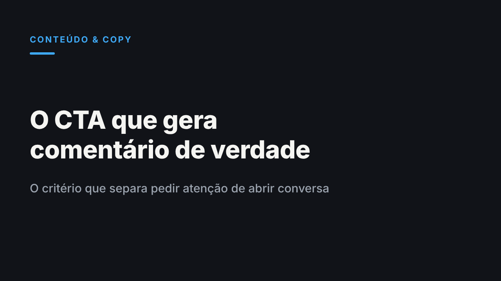

O critério que faz um CTA gerar comentário de verdade
1. Abra o editor de artigos
Abrir editor de artigos do LinkedIn2. Título e subtítulo
3. Capa

Baixar capa4. Texto do artigo (cola com a formatação)
Um CTA genérico pede atenção. Um CTA específico aponta para uma tensão que o leitor já sentia antes de chegar ao final do post. Essa diferença, não o tom nem a pontuação da frase, decide se alguém para para comentar ou só rola a tela.
Um estudo da Metricool sobre a base do LinkedIn em 2026, feito a partir de mais de 670 mil posts, mostra o padrão: publicações com uma pergunta clara ou um convite direto recebem mais comentários do que as que fecham sem pedir nada. O detalhe que o dado não mostra é que boa parte dos CTAs hoje pede sem especificar o quê.
O que conta como CTA genérico
"Comenta aqui embaixo", "e você, o que pensa?", "deixa sua opinião": são variações da mesma pergunta aberta. Funcionam como convite de cortesia, não como gatilho de participação. O leitor lê, concorda ou discorda em silêncio, e segue o feed. Não existe nada específico o suficiente para responder.
Um CTA genérico trata todo leitor como se tivesse a mesma dúvida. Na prática, cada leitor chegou até aquele parágrafo carregando uma objeção diferente, e uma pergunta aberta não dá conta de nenhuma delas em particular.
O teste da dor específica
Um CTA específico nomeia a tensão que o próprio post levantou. Em vez de perguntar "o que você acha?", ele pergunta sobre a escolha que o leitor mais provavelmente enfrenta depois de ler aquele argumento.
Imagine um texto que defende que toda proposta comercial deveria ter preço fechado, sem faixa de variação. Um CTA genérico fecharia com "e você, concorda?". Um CTA específico fecharia com "qual foi a última vez que uma faixa de preço te custou uma venda?". A segunda pergunta não pede opinião, pede um caso. Um caso é mais fácil de responder do que uma opinião, porque já vem com os detalhes dentro.
Por que isso pesa mais do que parece
A HubSpot analisou mais de 330 mil CTAs e encontrou uma diferença grande entre chamadas genéricas e chamadas escritas para o contexto específico de quem lê: a versão específica converteu bem mais que a genérica. O mecanismo se repete em um post de LinkedIn. Quanto mais o CTA parece escrito para qualquer pessoa, menos ele parece escrito para quem está lendo agora.
Isso explica por que um post pode ter alcance alto e comentário baixo ao mesmo tempo. O alcance depende do algoritmo. O comentário depende de o leitor sentir que aquela pergunta é sobre a vida dele, não sobre o post.
O mesmo estudo da Metricool aponta que perfis pessoais têm taxa média de engajamento mais alta do que páginas de empresa, e que a diferença aparece justamente nos comentários: página gera compartilhamento, perfil pessoal gera conversa. Faz sentido. Uma pergunta específica funciona melhor quando quem lê sente que está respondendo a uma pessoa, não a uma marca pedindo interação.
Como testar um CTA antes de publicar
Três perguntas ajudam a separar um CTA específico de um genérico com cara de específico:
- Alguém que nunca leu o resto do post entenderia a pergunta sem contexto? Se sim, ela é genérica demais.
- A pergunta pede uma opinião ou pede um caso, uma data, uma escolha concreta? Casos geram respostas mais longas e mais pessoais.
- Dá para responder em uma palavra? Se dá, ela não vai abrir conversa.
Nenhuma dessas perguntas exige dado novo ou ferramenta. Exige reler o próprio texto como se fosse a primeira vez que alguém o visse, sem o contexto de quem escreveu.
O limite da especificidade
Existe um ponto em que isso vira armadilha. Um CTA tão fechado que só aceita uma resposta certa, ou que constrange quem pensa diferente, troca comentário real por comentário performático. A especificidade serve para abrir uma conversa, nunca para fechar o espaço de quem discorda.
Imagine um post que defende cortar reuniões semanais de alinhamento e fecha perguntando "você também finge que aprende algo nessas reuniões?". A pergunta é específica, mas só cabe quem já concorda. Quem discorda não tem como responder sem parecer a favor de perder tempo. O CTA que funciona deixa espaço para os dois lados do argumento, não só para quem já pensa como quem escreveu.
O objetivo nunca é maximizar o número de comentários. É fazer a pergunta certa para quem já leu até ali, e deixar a resposta livre de verdade.
Qual foi o último CTA que você reescreveu depois de perceber, numa segunda leitura, que servia pra qualquer post?
5. Depois de publicar: aviso curto no feed
Um CTA genérico pede atenção. Um específico aponta pra uma dúvida que o leitor já tem.
Essa diferença decide se o post junta visualização passiva ou comentário de verdade.
Escrevi sobre o teste que uso pra separar um do outro, e por que "comenta aqui embaixo" parou de funcionar.
Artigo completo no link do primeiro comentário.
#copywriting #marketingdeconteudo #linkedin